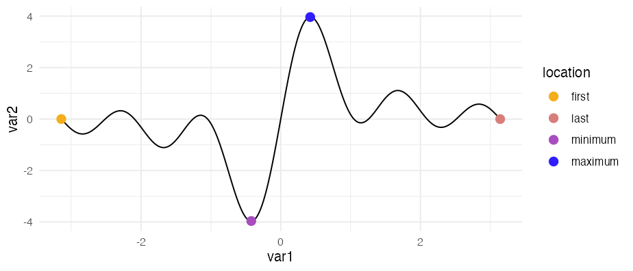
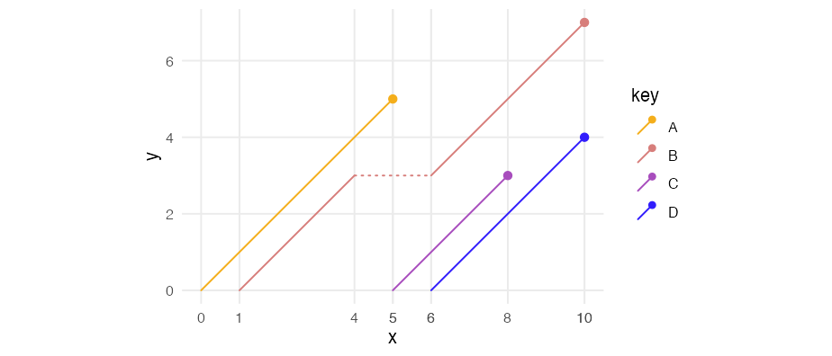
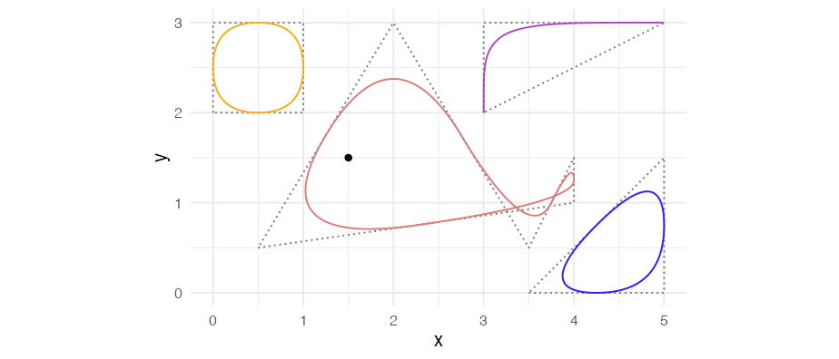
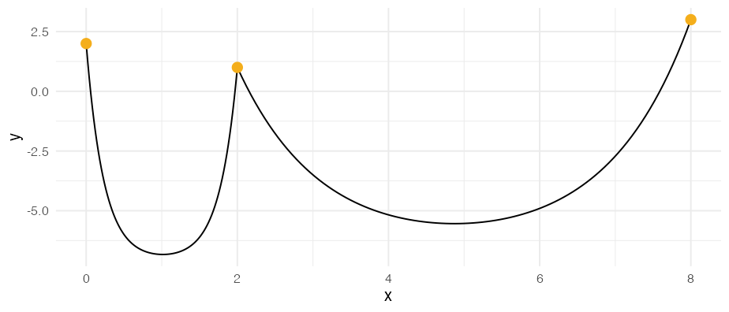

ggpointless is an extension of the ggplot2 library providing additional layers.
Installation
You can install ggpointless from CRAN with:
install.packages("ggpointless")To install the development version from GitHub use:
# install.packages("devtools")
devtools::install_github("flrd/ggpointless")Once you have installed the package, attach it by calling:
What will you get
-
geom_pointless()– emphasizes some observations with points -
geom_lexis()– draws a Lexis diagram -
geom_chaikin()– applies Chaikin’s corner cutting algorithm -
geom_catenary()– draws a catenary curve
See vignette("ggpointless") for details and examples.
geom_pointless
geom_pointless() let’s you highlight the first, or last observations, sample minimum and sample maximum to provide additional context. Or just some visual sugar. geom_pointless() behaves similar to geom_point() except that it has a location argument. You can set it to "first", "last" (default), "minimum", "maximum", and "all", where "all" is just shorthand to select "first", "last", "minimum" and "maximum".
cols <- c("#f4ae1b", "#d77e7b", "#a84dbd", "#311dfc")
theme_set(theme_minimal())
x <- seq(-pi, pi, length.out = 500)
y <- outer(x, 1:5, function(x, y) sin(x * y))
df1 <- data.frame(
var1 = x,
var2 = rowSums(y)
)
ggplot(df1, aes(x = var1, y = var2)) +
geom_line() +
geom_pointless(aes(color = after_stat(location)),
location = "all",
size = 3
) +
scale_color_manual(values = cols)
geom_lexis
geom_lexis() is a combination of a segment and a point layer. Given a start value and an end value, this function draws a 45° line which indicates the duration of an event. Required are x and xend aesthetics, y and yend coordinates will be calculated.
df2 <- data.frame(
key = c("A", "B", "B", "C", "D"),
x = c(0, 1, 6, 5, 6),
xend = c(5, 4, 10, 8, 10)
)
ggplot(df2, aes(x = x, xend = xend, color = key)) +
geom_lexis(aes(linetype = after_stat(type)), size = 2) +
coord_equal() +
scale_x_continuous(breaks = c(df2$x, df2$xend)) +
scale_color_manual(values = cols) +
scale_linetype_identity() +
theme(panel.grid.minor = element_blank())
See also the LexisPlotR package.
geom_chaikin
Chaikin’s corner cutting algorithm let’s you turn a ragged path or polygon into a smoothed one. Credit to Farbfetzen / corner_cutting.
lst <- list(
data = list(
closed_square = data.frame(x = c(0, 0, 1, 1), y = c(2, 3, 3, 2)),
whale = data.frame(x = c(.5, 4, 4, 3.5, 2), y = c(.5, 1, 1.5, .5, 3)),
open_triangle = data.frame(x = c(3, 3, 5), y = c(2, 3, 3)),
closed_triangle = data.frame(x = c(3.5, 5, 5), y = c(0, 0, 1.5))
),
color = cols,
closed = c(TRUE, TRUE, FALSE, TRUE)
)
ggplot(mapping = aes(x, y)) +
lapply(lst$data, function(i) {
geom_polygon(data = i, fill = NA, linetype = "12", color = "#777777")
}) +
Map(f = function(data, color, closed) {
geom_chaikin(data = data, color = color, closed = closed)
}, data = lst$data, color = lst$color, closed = lst$closed) +
geom_point(data = data.frame(x = 1.5, y = 1.5)) +
coord_equal()
See also the smoothr package.
geom_catenary
Draws a flexible curve that simulates a chain or rope hanging loosely between two fixed points. By default, a chain length twice the Euclidean distance between each x/y combination is used. See vignette("ggpointless") for details.
Credit to: dulnan/catenary-curve
ggplot(data.frame(x = 1:5, y = sample(5)),
aes(x, y)) +
geom_catenary() +
geom_point(size = 3, colour = "#f4ae1b")
#> Set chainLength to 23.7
Data
In addition to the geoms & stats, the following data sets are contained in ggpointless:
-
co2_ml: CO2 records taken at Mauna Loa -
covid_vac: COVID-19 Cases and Deaths by Vaccination Status -
female_leaders: Elected and appointed female heads of state and government
For more examples call vignette("examples").
Code of Conduct
Please note that this project is released with a Contributor Code of Conduct. By participating in this project you agree to abide by its terms.